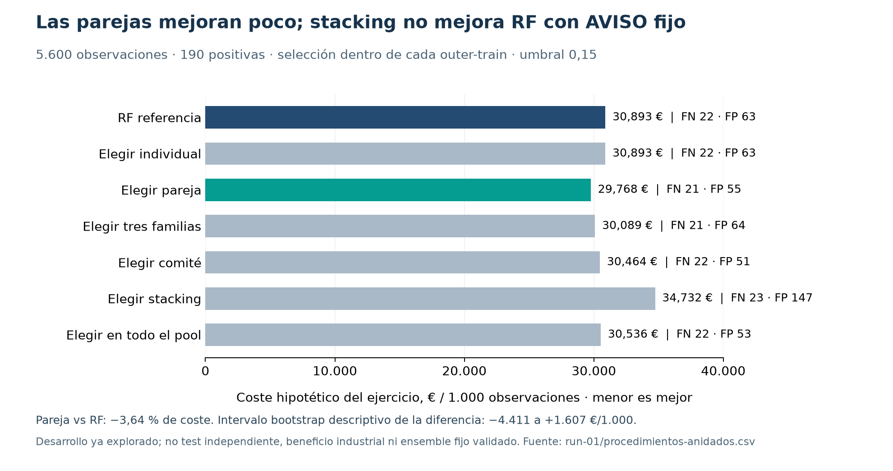

07 · RF frente a los ensembles
Sí había comparativa. La hemos ampliado y RF sigue siendo una buena referencia, pero no gana siempre.
CG34 ya probó 50 configuraciones y 831 unidades de entrenamiento. La ampliación compara 2.998 configuraciones y reglas por partición: 40 individuales, 2.340 pares, 560 ternas de familias, 10 comités, 18 variantes de stacking y 30 uniones de rareza. Se reutilizan predicciones selladas y se entrenan 54 meta-modelos nuevos.

Lectura que podemos defender
Con AVISO 0,15, RF omite 22 positivos y genera 63 falsas alarmas. Elegir la pareja dentro del entrenamiento deja 21 y 55. El coste hipotético baja un 3,64 %, pero su intervalo descriptivo incluye cero. La pareja recupera dos positivos y pierde uno que RF detectaba.
Los miembros elegidos cambian entre particiones. Se está evaluando un procedimiento de selección, no un ensemble fijo listo para desplegar. Stacking no mejora RF con la política B.
5.600 filas de desarrollo, 190 positivas; 3 outer × 3 inner. Sin validación/test nuevos. Costes FN5.000/FP200/TP300/TN0 €. No ahorro industrial. Datos y cálculos completos: COMPARATIVA.html y run-01.
08 · La información y sus límites
Lo que ya aprovechamos
Cinco sensores y tipo de máquina; diferencia térmica, potencia mecánica estimada y desgaste × torque. Sin nulos ni duplicados en las entradas del train. Las derivadas ayudan a los modelos aunque no creen nueva información respecto a los sensores.
| Error observado | RF B | Pareja B |
|---|
| Desgaste de herramienta TWF: 17 positivos | 16 omitidos | 14 omitidos |
| HDF: 67 positivos | 0 omitidos | 0 omitidos |
| PWF: 53 positivos | 0 omitidos | 1 omitido |
| OSF: 59 positivos | 0 omitidos | 0 omitidos |
| Positivos sin subtipo: 6 | 6 omitidos | 6 omitidos |
Los subtipos pueden solaparse. Son diagnóstico posterior; nunca entradas. Estas cifras no acreditan detección perfecta de un mecanismo industrial.Lo que no debemos fabricar
Los IDs y la reproducción de filas no crean una trayectoria física por máquina. Los indicadores TWF/HDF/PWF/OSF/RNF contienen información del resultado y no pueden introducirse como sensores. El score sigue describiendo estado actual, sin ETA, RUL o probabilidad futura calibrada.
Decisión propuesta para sincronizar al equipo
1. Conservar RF como referencia servida. Se entrega aparte un candidato de investigación CART 75 % + LightGBM 25 %, ajustado y con recarga exacta.
2. Explicar los errores, el coste y la incertidumbre; no elegir un ganador mirando miles de resultados outer.
3. Centrar el siguiente trabajo de datos en desgaste, resultados de mantenimiento, historial físico e identidad estable.
4. Antes de promover una mezcla fija, validar contrato, calibración, latencia y evidencia nueva independiente.
5. No aumentar la nota estimada solo por multiplicar combinaciones.
La ampliación no modifica API, modelo servido, umbrales operativos ni datos originales. Cálculos por una vía distinta verifican 21 procedimientos, 8.934 filas de políticas y 26.802 resultados por fold. Es revisión técnica local, sin aceptación humana/docente.